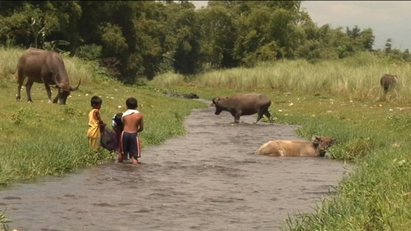

-
Trails of War
by Aaron Cutler March 8, 2012
courtesy of the artist
The Philippines were officially occupied by the United States from 1903 to 1991. During this time, the American military used the area as a launch-pad for nearly every major conflict in the Middle East, East and South Asia, from the Boxer War to Desert Storm. In 1991, Mt. Pinatubo, a volcano located on the northern island of Luzon, erupted, displacing over 250,000 people, and the American and Filipino governments signed a hasty treaty agreeing, among other things, that US soldiers would abandon their bases to make room for those displaced. As time passed, the Filipinos living around what had been Clark Air Base Command (CABCOM) grew sick. Children were stillborn, or born with diseases. As recently as two years ago, an average of eight people in the area were dying each day. The US military had been dumping chemicals into the water, it turned out, and poisoning the air and the land surrounding it. The treaty signed when they agreed to leave had stated that the States could not be held responsible for any damage.
This background is one historical context for Vapor Trail (Clark), John Gianvito’s 2010 documentary, which is screening Sunday, March 11th at Anthology Film Archives as part of the “Internationalist Cinema For Today” series curated by critic-historian Nicole Brenez. The film, however, invokes multiple histories. Gianvito, who in addition to being a filmmaker is a programmer and teacher, sees his separate activities as part of one larger project: his movies are often about collecting, organizing, and educating. Gianvito builds drama at the intersection of multiple struggles. 2001’s The Mad Songs of Fernanda Hussein simultaneously shows racism in American imperialism and against Americans at home; 2007’s Profit motive and the whispering wind presents race, class, immigrant, gender, and sexual identity all working together in America’s history of labor struggles. A major goal in Gianvito’s work is to encourage viewers to take a long view of history, and so empower them with the ability to recognize historical patterns, and change them.
Vapor Trail (Clark) begins with hills in early morning light, a brook running nearby. This is a story of the land, and you have to start there, because the land is what society is built on top of; it’s from the land that people draw their health, or don’t. Gianvito gives much of the film over to interviews in which people describe how the land has affected them. We watch them as they talk. “My eye is closed, and wants to open,” one resident says of his disfigurement. An old man discusses his pain with a face whose skin is peeling off. The film sits with them and listens to them, in long interviews. Gianvito has said that he wouldn’t let himself shorten what they had to say, let alone cut it out.
The film moves between their voices and others that speak in different ways, but equally loudly. We linger on gravestones of people who died from contamination. Some lived to adulthood, some died young, and some were born dead, but in all cases they speak to the camera as stone with engraved names and birthdates. The film contains many different kinds of burials and excavations. Gianvito watches workers poison themselves by digging foul ditches in the present, and then digs up history. Archive photographs and footage of war victims appear, ranging as far back as the Philippine-American War (1899-1902), on which so little information exists that the number of Filipino dead could be anywhere between two hundred thousand and 1.5 million. Many Filipinos don’t even know about it. At one point Gianvito asks a manager overseeing the area’s new construction and development if he learned anything of the war in school — the man greets the question with a blank.
As Trail progresses, an activist named Myrla Baldonado becomes the movie’s main character. The first time we see her, she’s at the US Social Forum, near a table advocating the end of occupations in Iraq, Haiti, and Palestine. She’s speaking as a representative of her organization, the People’s Task Force for Bases Clean Up. Like Gianvito, Baldonado is a teacher; just as he took several trips to the Philippines to film this story, she travels the world telling it. Back home Baldonado, a former political prisoner, works with survivors and tries to get the attention of international aid groups.
The more time we spend with her, the more we appreciate her as a personality and not just a political actor; Gianvito’s film seems partly a record of a specific time in her life. She works throughout at preparing for the Prince of Monaco’s visit, which she recognizes as a blatant publicity gesture. Her movement could use the Prince’s visit, yet she won’t compromise with it. He wants to speak only to a small, select group of residents, but if he’s going to come, she insists, he needs to spend time with many.
Baldonado’s demand that her people be seen is also the movie’s. Gianvito dedicates Vapor Trail (Clark) to the great Japanese filmmaker Noriaki Tsuchimoto, whose 1972 documentary Minamata shows a small fishing town’s residents poisoned by a large chemical company. Both Gianvito and Tsuchimoto prioritize a clear, straightforward presentation of information and situation, focusing on the need to remember human faces and recognize human casualties.
The American military still has troops stationed in the Philippines, and Gianvito is still compelled towards presenting the results of the States’ unceasing colonial march. The filmmaker is currently working on a sequel about the effects of an abandoned American naval base near CABCOM, as well as editing an anthology film called Far from Afghanistan. I’ve seen pieces of Afghanistan. that present victims of America’s longest-running war, both abroad and back in the States.
A central fiction of American political life is that wars are waged strictly between governments and through their armies. This is not so. War often inflicts its greatest pain on civilians, as has been happening in the Philippines, in Iraq, and in Afghanistan. A recent New York Times opinion piece spoke of the need to bring “Iran” to its knees, without specifying which actual human beings would be affected. But we know what will happen, because we’ve seen this so often — mass-scale destruction at first, and then a slower-paced but still destructive subsequent occupation, will poison the land and its people.
“It is yet another Civilized Power [approaching], with its banner of the Prince of Peace in one hand and its loot-basket and its butcher-knife in the other,” Mark Twain wrote, in an essay Gianvito quotes at Vapor Trail (Clark)’s outset. For this filmmaker, any one historical instance of damage is part of a larger trend. The American government is responsible not only for the people it’s killed, but also for the ones it is killing.
Vapor Trail (Clark) will be screened as part of Internationalist Cinema For Today, curated by Nicole Brenez, Sunday March 11 at 1 PM, at Anthology Film Archives, 32 2nd Avenue New York, NY 10003.